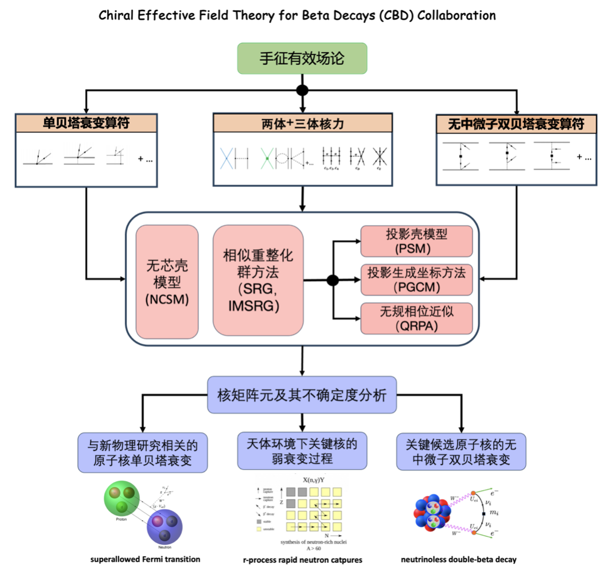

DRHBc Mass Table Collaboration
The DRHBc Mass Table Collaboration is a collaboration of Universities and Institutions from China and South Korea. The DRHBc Mass Table Collaboration wish to combine the strengths from a number of Universities and Institutions to accomplish the following:
Chiral Effective Field Theory for Beta Decays (CBD) Collaboration
Introduction
Members
- Institution
- 尧江明（PI） 中山大学
- 焦长峰 中山大学
- 白春林 四川大学
- 王龙军 西南大学